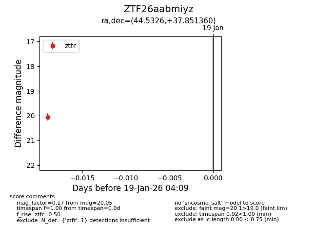
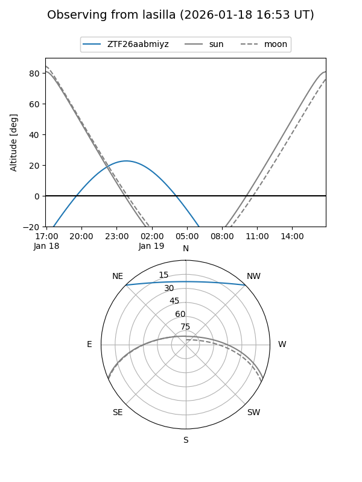
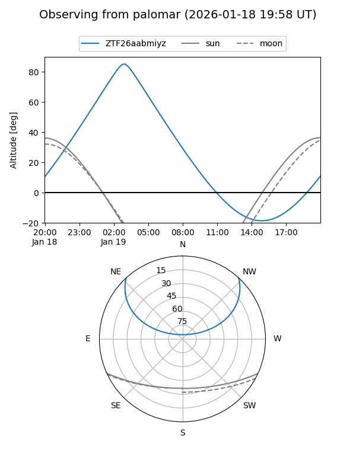

ZTF26aabmiyz
Target ZTF26aabmiyz at 2026-01-21 04:11
Aliases and brokers:
FINK: link
Lasair: link
ALeRCE: link
alt names
ZTF26aabmiyz (ztf,fink_ztf)
Coordinates:
equatorial (ra, dec) = 44.5326,+37.85136
equatorial (HMS+DMS) = 02:58:07.82,+37:51:04.90
galactic (l, b) = (148.8663,-18.55852)
Flags:
Photometry:
last ztfr=20.05
1 ztfr detections
Lightcurve

Visibility


Additional plots